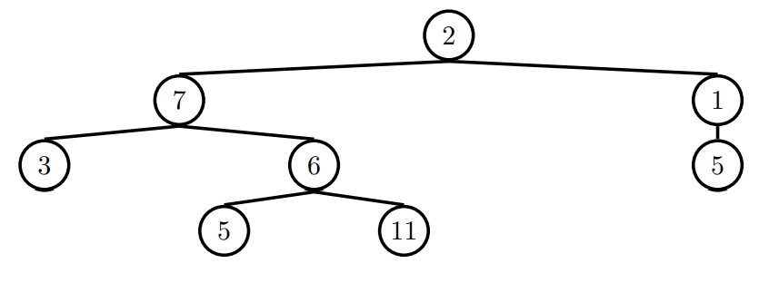

Discussion 7: String Representation, Efficiency, Linked Lists, Mutable Trees
Discussion 7 Vitamin
To encourage everyone to watch or attend discussion orientation, we have created small discussion vitamins. If you complete 5 of the next 6 vitamins, you can earn one point of extra credit added to your final grade in the course. Please answer all of the questions in this form by Thursday at 11:59 PM.
Representation - Repr and Str
There are two main ways to produce the "string" of an object in Python:
str() and repr(). While the two are similar, they are
used for different purposes. str() is used to describe
the object to the end user in a "Human-readable" form, while repr() can be thought of as
a "Computer-readable" form mainly used for debugging and development.
When we define a class in Python, str() and repr() are
both built-in methods for the class. We can call an object's str() and
repr() by using their respective methods. These methods can be invoked by calling repr(obj) or str(obj) rather than the dot notation format obj.__repr__() or obj.__str__(). In addition, the print() function calls the str() method of the object,
while simply calling the object in interactive mode calls the repr()
method.
Here's an example:
class Rational:
def __init__(self, numerator, denominator):
self.numerator = numerator
self.denominator = denominator
def __str__(self):
return f'{self.numerator}/{self.denominator}'
def __repr__(self):
return f'Rational({self.numerator},{self.denominator})'
>>> a = Rational(1, 2)
>>> str(a)
'1/2'
>>> repr(a)
'Rational(1,2)'
>>> print(a)
1/2
>>> a
Rational(1,2)Questions
Q1: Repr-esentation WWPD
What would Python display?class A:
def __init__(self, x):
self.x = x
def __repr__(self):
return self.x
def __str__(self):
return self.x * 2
class B:
def __init__(self):
print('boo!')
self.a = []
def add_a(self, a):
self.a.append(a)
def __repr__(self):
print(len(self.a))
ret = ''
for a in self.a:
ret += str(a)
return ret>>> A('one')>>> print(A('one'))>>> repr(A('two'))>>> b = B()>>> b.add_a(A('a'))
>>> b.add_a(A('b'))
>>> bLinked Lists
There are many different implementations of sequences in Python. Today, we'll explore the linked list implementation.
A linked list is either an empty linked list, or a Link object containing a
first value and the rest of the linked list.
To check if a linked list is an empty linked list, compare it against the class
attribute Link.empty:
if link is Link.empty:
print('This linked list is empty!')
else:
print('This linked list is not empty!')Check out the implementation of the Link class below:
class Link:
empty = ()
def __init__(self, first, rest=empty):
assert rest is Link.empty or isinstance(rest, Link)
self.first = first
self.rest = rest
def __repr__(self):
if self.rest:
rest_str = ', ' + repr(self.rest)
else:
rest_str = ''
return 'Link({0}{1})'.format(repr(self.first), rest_str)
def __str__(self):
string = '<'
while self.rest is not Link.empty:
string += str(self.first) + ' '
self = self.rest
return string + str(self.first) + '>'Questions
Q2: Sum Nums
Write a function that takes in a a linked list and returns the sum of all
its elements. You may assume all elements in s are integers. Try to implement this recursively!
Q3: (Tutorial) Inheritance Review: That's a Constructor, __init__?
Let's say we want to create a class Monarch that inherits from another class, Butterfly. We've partially written an __init__ method for Monarch. For each of the following options, state whether it would correctly complete the method so that every instance of Monarch has all of the instance attributes of a Butterfly instance? You may assume that a monarch butterfly has the default value of 2 wings.
class Butterfly():
def __init__(self, wings=2):
self.wings = wings
class Monarch(Butterfly):
def __init__(self):
_________________________________________
self.colors = ['orange', 'black', 'white']super.__init__()super().__init__()Butterfly.__init__()Butterfly.__init__(self)Some butterflies like the Owl Butterfly have adaptations that allow them to mimic other animals with their wing patterns. Let's write a class for these MimicButterflies. In addition to all of the instance variables of a regular Butterfly instance, these should also have an instance variable mimic_animal describing the name of the animal they mimic. Fill in the blanks in the lines below to create this class.
class MimicButterfly(______________):
def __init__(self, mimic_animal):
_______________.__init__()
______________ = mimic_animalWhat expression completes the first blank?
What expression completes the second blank?
What expression completes the third blank?
Q4: (Tutorial) Warmup: The Hy-rules of Linked Lists
In this question, we are given the following Linked List:
ganondorf = Link('zelda', Link('young link', Link('sheik', Link.empty)))What expression would give us the value 'sheik' from this Linked List?
What is the value of ganondorf.rest.first?
Q5: (Tutorial) Multiply Lnks
Write a function that takes in a Python list of linked lists and multiplies them element-wise. It should return a new linked list.
If not all of the Link objects are of equal length, return a
linked list whose length is that of the shortest linked list given. You
may assume the Link objects are shallow linked lists, and that
lst_of_lnks contains at least one linked list.
Q6: (Tutorial) Flip Two
Write a recursive functionflip_two that takes as input a
linked list s and mutates s so that every pair
is flipped.
Run in 61A Code
Trees
Recall the tree abstract data type: a tree is defined as having a label and some branches. Previously, we implemented the tree abstraction using Python lists. Let's look at another implementation using objects instead:
class Tree:
def __init__(self, label, branches=[]):
for b in branches:
assert isinstance(b, Tree)
self.label = label
self.branches = branches
def is_leaf(self):
return not self.branchesWith this implementation, we can mutate a tree using attribute assignment, which wasn't possible in the previous implementation using lists. That's why we sometimes call these objects "mutable trees."
>>> t = Tree(3, [Tree(4), Tree(5)])
>>> t.label = 5
>>> t.label
5Questions
Q7: Make Even
Define a functionmake_even which takes in a tree
t whose values are integers, and mutates the tree such that all the
odd integers are increased by 1 and all the even integers remain the same.
Run in 61A Code
Q8: (Tutorial) Find Paths
Hint: This question is similar tofind_paths on Discussion 05.
Define the procedure find_paths that, given a Tree t and an entry, returns a list of lists containing the nodes along each path from the root of t to entry. You may return the paths in any order.
For instance, for the following tree tree_ex, find_paths should behave as specified in the function doctests.

Efficiency
When we talk about the efficiency of a function, we are often interested in the following: as the size of the input grows, how does the runtime of the function change? And what do we mean by runtime?
square(1)requires one primitive operation: multiplication.square(100)also requires one. No matter what inputnwe pass intosquare, it always takes a constant number of operations (1). In other words, this function has a runtime complexity of Θ(1). Check out the table below:
| input | function call | return value | operations |
|---|---|---|---|
| 1 | square(1) |
1*1 | 1 |
| 2 | square(2) |
2*2 | 1 |
| ... | ... | ... | ... |
| 100 | square(100) |
100*100 | 1 |
| ... | ... | ... | ... |
| n | square(n) |
n*n | 1 |
factorial(1)requires one multiplication, butfactorial(100)requires 100 multiplications. As we increase the input size of n, the runtime (number of operations) increases linearly proportional to the input. In other words, this function has a runtime complexity of Θ(n). Check out the table below:
| input | function call | return value | operations |
|---|---|---|---|
| 1 | factorial(1) |
1*1 | 1 |
| 2 | factorial(2) |
2*1*1 | 2 |
| ... | ... | ... | ... |
| 100 | factorial(100) |
100*99*...*1*1 | 100 |
| ... | ... | ... | ... |
| n | factorial(n) |
n*(n-1)*...*1*1 | n |
Questions
Q9: The First Order...of Growth
What is the efficiency of rey?
def rey(finn):
poe = 0
while finn >= 2:
poe += finn
finn = finn / 2
returnWhat is the efficiency of mod_7?
def mod_7(n):
if n % 7 == 0:
return 0
else:
return 1 + mod_7(n - 1)